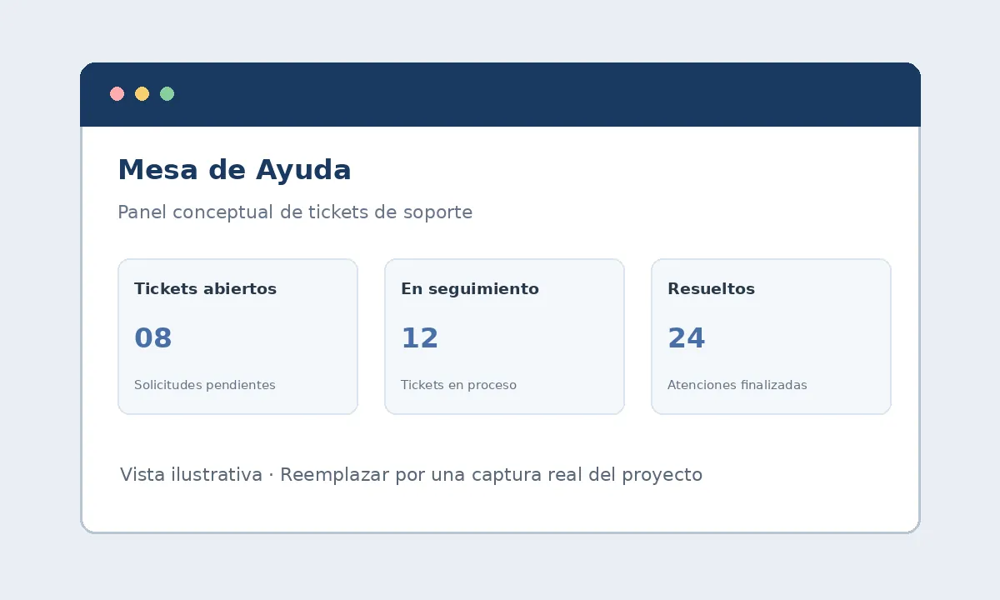
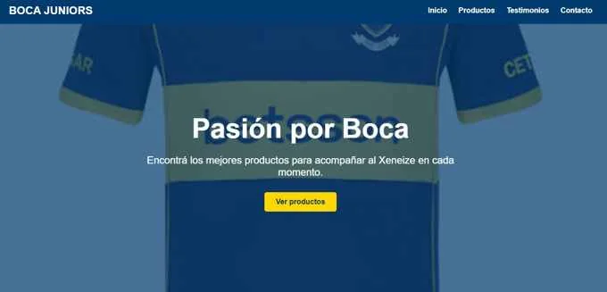
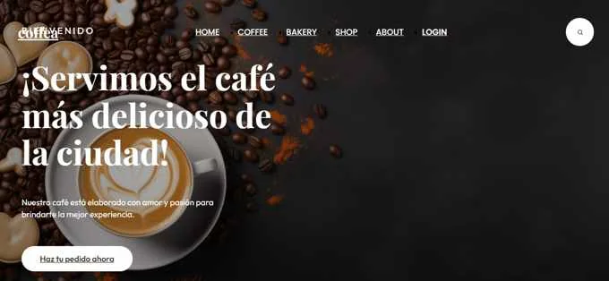

Años de estudio
PORTFOLIO PERSONAL / WEB + UX/UI
Olivera Eloy
Desarrollador Web
y Diseñador UX/UI.
Estudiante de Licenciatura en Sistemas de Información. Mi enfoque: unir lógica, diseño y claridad para crear experiencias web útiles y fáciles de usar.
Mi recorrido, en cifras
Proyectos realizados
Herramientas utilizadas
Cursos completados
01 / HABILIDADES
Lógica y diseño.
Un mismo enfoque.
Conocimientos que conectan la idea con la experiencia final.
Desarrollo web
Interfaces claras, semánticas y adaptables a cada pantalla.
Diseño UX/UI
De entender una necesidad a prototipar una solución.
Programación
Resolución de problemas y pensamiento estructurado.
Herramientas
Organización, colaboración y control de versiones.
02 / PROYECTOS
Del concepto a la pantalla.
Una selección para mostrar cómo pienso, diseño y desarrollo.

01 / PLATAFORMA WEB · 2026
Mesa de Ayuda
Aplicación web orientada a la gestión de clientes y tickets de soporte técnico. Me permitió fortalecer mis conocimientos sobre peticiones HTTP, validación de datos y comunicación entre cliente y servidor.

02 / PRÁCTICAS DE DISEÑO · 2026
Tienda Boca Juniors
Página web de venta de indumentaria de Boca Juniors, realizada durante prácticas académicas de desarrollo web. Trabajé la organización del contenido, los estilos y una navegación sencilla para explorar productos.

03 / LANDING PAGE · 2026
Coffea Landing Page
Landing page para una marca de café, creada como práctica académica. Diseño visual minimalista, jerarquía de contenidos y adaptación responsive para distintos tamaños de pantalla.
03 / FORMACIÓN
Una base sólida.
Mucho por explorar.
Estudios y formación complementaria que construyen mi perfil profesional.
-
2024 — Actualidad
Licenciatura en Sistemas de Información
Facultad de Ciencia y Tecnología (UADER)
- Formación en programación, desarrollo de software, análisis de sistemas y metodologías de diseño.
- Proyectos académicos aplicando programación orientada a objetos, principios de diseño y tecnologías web.
-
2025
Curso de desarrollo web
Academia de Formación Digital
- Formación en HTML, CSS, JavaScript, Node.js y Express.
- Diseño responsive, integración de APIs y buenas prácticas.
-
2026
Curso de diseño UX/UI
Instituto de Diseño Digital
- Diseño de interfaces, wireframes y prototipos interactivos en Figma.
- Investigación de usuarios y sistemas de diseño.
04 / SOBRE MÍ
Curiosidad para entender.
Criterio para crear.
Soy Eloy Olivera, estudiante de Licenciatura en Sistemas de Información con interés en el desarrollo web y el diseño UX/UI. Me interesa comprender cómo funcionan los sistemas y cómo las personas los utilizan.
Me motiva seguir aprendiendo y aplicar mis conocimientos en proyectos reales. Me interesa especialmente el desarrollo web y el diseño UX/UI, porque me permiten combinar la lógica de la programación con la creatividad.
Analizo
Primero entiendo el problema y organizo la información antes de tomar decisiones.
Diseño
Transformo necesidades en recorridos claros y propuestas fáciles de utilizar.
Construyo
Conecto la lógica del desarrollo web con una experiencia coherente y funcional.
05 / CONTACTO
¿Creamos algo
que tenga sentido?
Me interesa aportar, aprender y crecer en un equipo de desarrollo o diseño. Conversemos sobre tu próxima oportunidad.